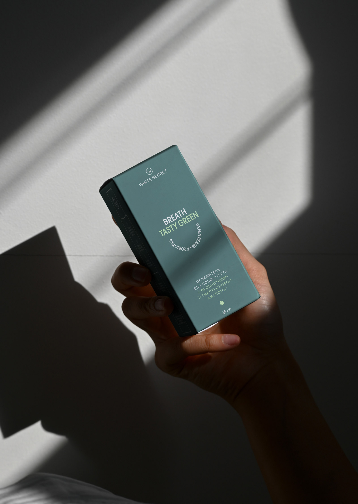
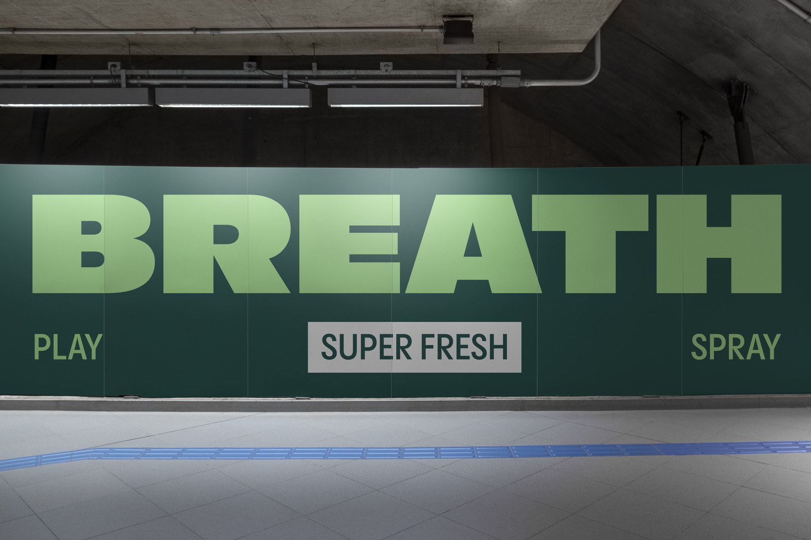
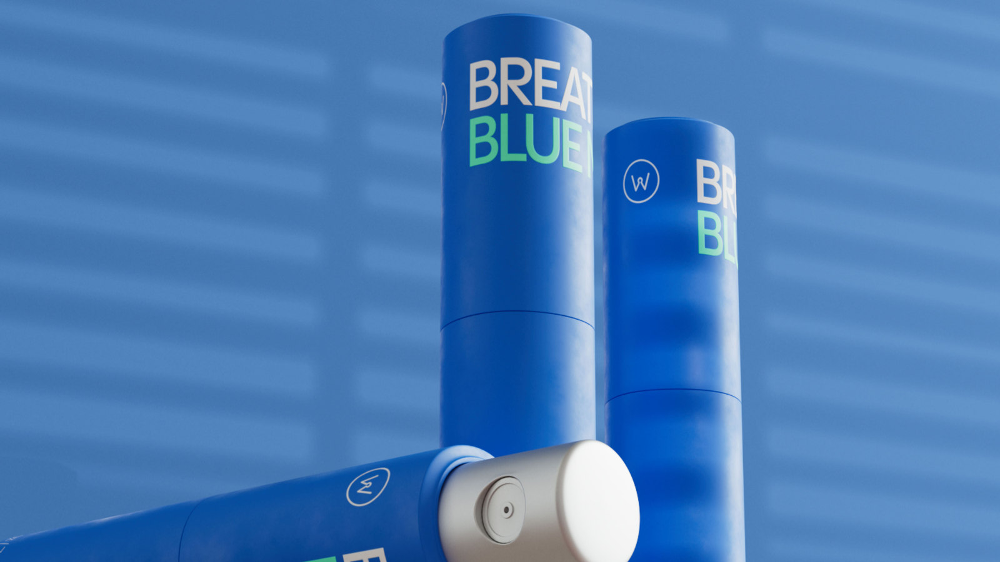
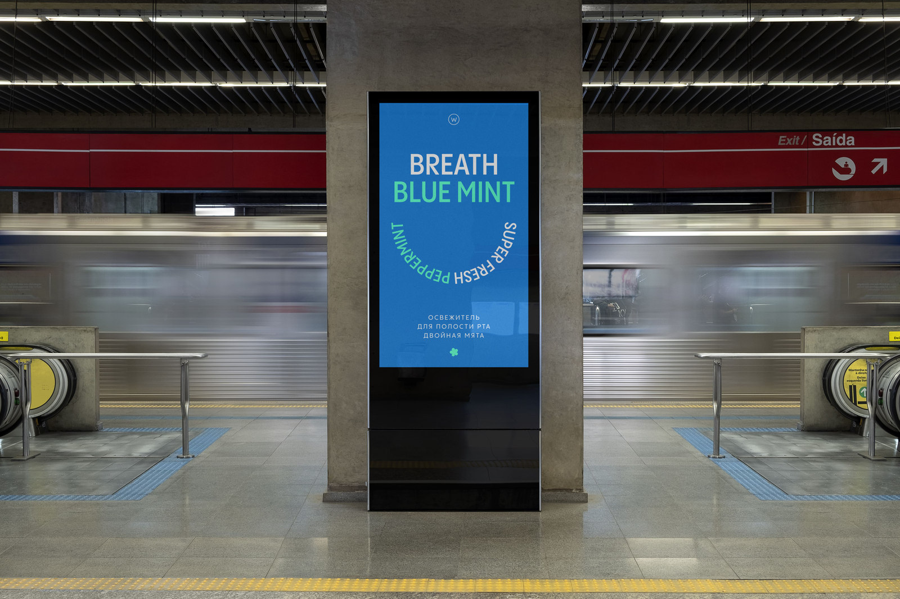

White Secret Mouthfreshers
Mouthfreshners by White Secret represent an innovative line of mouth fresheners, tailored to the needs of millennials and Gen Y. The concept revolves around the uniqueness of each bottle, associating it with a specific season to evoke joy, freshness, and memories of life's best moments. The vibrant and minimalist design makes the product visually appealing and easily recognizable to the target audience. Each bottle is accompanied by a captivating short story, immersing the user in a particular atmosphere. This concept not only offers an effective oral care solution but also creates a unique emotional experience for users, combining health care with pleasant reminiscences. Mouthfreshners become an indispensable part of daily routine, bringing joy, freshness, and supporting the unique lifestyle and style of the target audience. The design is striking and everyday, making the bottle desirable to carry around like perfume.



